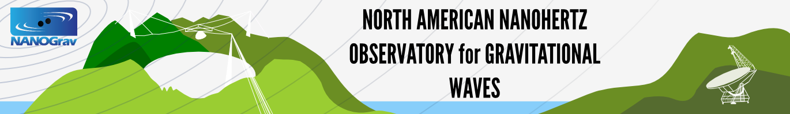

Public Talks
| When | Who | What and Where |
|---|---|---|
| 9 Sept 2013 | Ryan Lynch | Vanier College — Montreal, QC |
| 18 July 2013 | Ryan Lynch | Public Astronomy Night — McGill University |
| 20 May 2013 | Michael Koop | PSC Student Seminar |
| 5 May 2013 | Ryan Lynch | PSC Student Seminar |
| 3 May 2013 | Michael Koop | UMEI High School — Leamington, ON |
Scientific Talks
| When | Who | What and Where |
|---|---|---|
| 13 Jun 2011 | Ingrid Stairs | "Novel Radio Telescopes" — Penticton, BC |
| 22 May 2011 | Paul Demorest and Scott Ransom | AAS Neutron Stars and Gravitational Waves Workshop — Boston, MA |
| 1–3 May 2011 | Rick Jenet, Paul Demorest, and Scott Ransom | American Physical Society meeting — Anaheim, CA |
| 28 Apr 2011 | Ingrid Stairs | Institute for Theory and Computation Colloquium — Harvard-Smithsonian Center for Astrophysics |
| 27 Apr 2011 | Paul Demorest | Astronomy Seminar — UC Santa Barbara |
| 6 Apr 2011 | Paul Demorest | Astronomy/Institute for Nuclear and Particle Physics Seminar — Ohio University |
| 9 Mar 2011 | Paul Demorest | Building on New Worlds, New Horizons — Santa Fe, NM |
| 23 Feb 2011 | Paul Demorest | Astronomy Colloquium&mash;University of Maryland |
| 9 Feb 2011 | Paul Demorest | Colloquium — Green Bank Observatory |
| 26 Jan 2011 | Paul Demorest | Astronomy/Cosmology Seminar — Univeristy of Pennsylvania |
| 24 Jan 2011 | Dan Stinebring | Arecibo Observatory |
| 11 Jan 2011 | Scott Ransom | AAS Warner Prize Lecture — Seattle, WA |
| 10 Jan 2011 | Rick Jenet, Paul Demorest, Alberto Sesana, and Ben Stappers | AAS Special Session — Seattle, WA |
| 30 Nov 2010 | Paul Demorest | Radio Astronomy Lab Seminar — UC Berkeley |
| 14 Oct 2010 | Ryan Shannon | Cornell Univ |
| 15 Apr 2010 | Scott Ransom | Colloqiuium — University of Arizona/NOAO |
| 19 Feb 2010 | Dan Stinebring | Aspen Meeting on BH Formation & Evolution — Aspen, CO |
| 28 Jan 2010 | Dan Stinebring | Arecibo Observatory |
| 28 Jan 2010 | Scott Ransom | Colloquium — Harvard-Smithsonian Center for Astrophysics |
| 6–8 Jan 2010 | Andrea Lommen, Paul Demorest, Ingrid Stairs, David Nice, and Ryan Shannon | International Union of Radio Science Meeting |
| 16 Dec 2010 | Andrea Lommen | Physics Colloquium — University of Michigan |
| 18 Nov 2009 | Scott Ransom | Physics and Astronomy Colloquium — Texas A&M University |
| 6 Nov 2009 | Scott Ransom | Physics Colloquium — University of Virginia |
| 22 Oct 2009 | Scott Ransom | Physics Colloquium — UC Santa Cruz |
| 10 Sep 2009 | Paul Demorest | Astronomy Colloqiuium — University of Virginia/NRAO |

This material is based in part on work supported by the National Science Foundation under Grant Number 968296. Any opinions, findings and conclusions ro recommendations expressed in this material are those of the author(s) and do not necessarily reflect the veiws of the National Science Foundation.